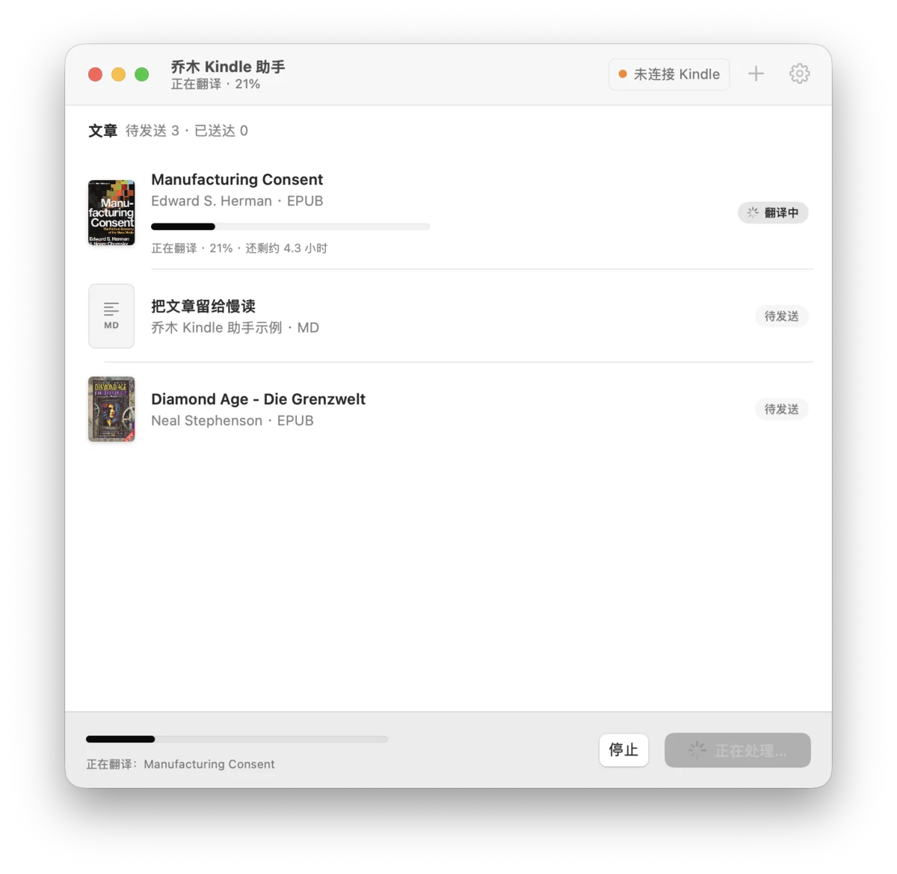

发送到 Kindle
拖进来，点发送
整个窗口都能拖入，可以一次拖很多本。应用先试上次的地址，找不到就在局域网里寻找已配对的 Kindle，发完读回文件比对 SHA-256。
- 家里有几台 Kindle，勾上就一起发；哪台不在线，之后只补发给它
- 失败的可以重试，发送记录都留着
- 换了 Wi-Fi 也能重新找到设备，或手动填 IP
- 书放在 KOReader 的
documents/我的文章

文章在 Obsidian 里写好、电子书下载好了，想放到 Kindle 上读，还得先转格式、找数据线、拷到对的文件夹。
转换、翻译、传输、校验都由应用完成。打开 KOReader 的「我的文章」，书已经在那儿了。
整个窗口都能拖入，可以一次拖很多本。应用先试上次的地址，找不到就在局域网里寻找已配对的 Kindle，发完读回文件比对 SHA-256。
documents/我的文章点「保存到本机」，原文转换、要翻译的书先翻译，完成后在访达里选中结果。拿去用别的阅读器，或者稍后再发。
拖入 EPUB、TXT、Word 或 Markdown，应用在本机认出书的语言；外文书一键选「中英对照」或「仅中文」，每本也能单独改，甚至翻成 20 种语言里的任意一种。先试译 3 段看看，满意再翻整本，图片和目录都保留。
The first thing to understand about the media is that they are businesses, selling a product to a market.
理解媒体，首先要明白：它们是企业，向市场出售一种产品。
What they sell is not news alone, but the attention of their readers.
它们卖的不只是新闻，还有读者的注意力。
电子书原样发送；笔记和文档转成带目录、适合小屏的 EPUB。
带 DRM 的 MOBI / AZW 会提前提示。PDF、MOBI 这类格式需要 Kindle 上的新版接收端，应用会识别并提醒你更新。
TXT 自动识别 GBK 编码，「第一章」「Chapter 1」变成章节标题。
双链转成文字，图片打进 EPUB，整篇嵌入和提示块都保留。只展开你选中文章引用到的内容。
[[置身事内]] → 置身事内 ![[图 1.png]] → 打包进 EPUB
⌘E 去掉 z-library、1lib 这类来源标记和「第二版」后缀，预览后再改名。
Diamond_Age (z-lib.org).epub
Diamond Age.epub
读回 Kindle 上的文件比对 SHA-256，确认一字不差才算送达。
列表显示 EPUB 封面、PDF 首页，书名和作者取自书本身，不显示冗长的文件名。
乔木 SimpleUI 是装在 KOReader 里的插件：像手机一样的读书首页，最近加入的书排在最前，「资讯」读乔木精选，划线就能 AI 翻译和问答。和 Kindle 助手各管一头，不装也不影响发送。
直接发送不经过任何云服务，也没有遥测。只有在你主动翻译时，正文才会提交给你选的模型服务。
拖进「应用程序」就行，不用开终端，也不用再装别的。
按首次配置把接收端写进 Kindle，再确认设备身份。发布包不含任何人的密钥，这一步不能跳过。
在 KOReader 的文件浏览器里打开 documents/我的文章 阅读。
是的。应用通过 KOReader 的 SSH 服务传文件，需要已越狱、装好 KOReader 并启用 SSH / Dropbear 插件的 Kindle。应用本身不包含越狱工具，也不要求安装乔木 SimpleUI。
从 1.11 起，应用每天自动检查一次更新，有新版时弹窗显示更新内容，点「安装更新」即可；也可以随时点菜单「乔木 Kindle 助手 › 检查更新…」。1.10 及更早的版本没有自动更新，需要从这里下载一次新版。应用已用 Developer ID 签名并经 Apple 公证，打开时不会再提示「无法验证开发者」。
有 Intel 版，可以在上面下载。它和 Apple 芯片版用同一份代码打包并通过了公证，但我们没有 Intel Mac，还没有实机测试过。遇到问题请到 GitHub 反馈。
直接发送完全免费。翻译需要模型服务：用 ChatGPT 账号登录走套餐额度；用 API Key 则按所选服务计费，整本的耗时和费用取决于书的长度、模型和限流。取消后再开始会复用已保存的检查点。
两台设备换到同一个新 Wi-Fi 后，应用会重新寻找设备，设备身份不随 IP 改变。常见家庭网络可以自动扫描，更大的网络可以手动填 IP。访客网络隔离、不同 Wi-Fi、跨互联网推送不在支持范围内。
实机测试过 Kindle Paperwhite 3（第七代），固件 5.16.2.1.1，KOReader v2026.07.1。其他型号和旧版 KOReader 尚未实机验证，欢迎在 GitHub 反馈。
它基于 chasepal/kindle-push-macos：原作者看了乔木的 Kindle / KOReader 分享后做了这个 Mac 小工具，乔木在此基础上加入了 EPUB 中文对照翻译等功能。翻译引擎是 MIT 开源的 bilingual_book_maker。